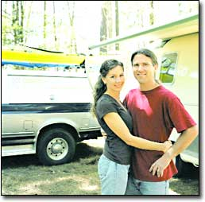

We sometimes drive 100 miles in our truck on 1 gallon of petrodiesel from the fuel pump because most of the fuel we are burning is used vegetable oil - and that’s even while dragging our homestead along behind us: a shiny 3,000-pound Airstream camper.
Shawn and I can stretch our petro-dollars far because of the ingenuous yet simple auxiliary fuel system we installed - one that enables us to burn a cleaner, greener and cheaper fuel that we regularly harvest from greasy spoons and fine eateries alike.
The Squeaky Wheel
Our diesel truck burns used vegetable oil, almost straight from the restaurant where we collect it to our fuel tank. Pyrotechnically speaking, vegetable oil and petrodiesel fuel aren’t so very different. If you thin vegetable oil (either with chemicals, as in biodiesel, or with heat, as with straight vegetable oil), it combusts very similarly to petrodiesel.
In fact, Rudolf Diesel, the German engineer who pioneered diesel engines in the early 1900s, originally designed diesel engines to burn vegetable oil. Today’s modern diesel engines will burn vegetable oil as easily as petrodiesel, too, as long as the oil is warmed (and therefore thinned) before combustion. Using used vegetable oil for fuel produces less pollution and decreases particulate emissions, helps keep grease out of landfills and sewers, and reduces our reliance on foreign oil. And it’s nontoxic and biodegradable, too.
Pieces and Parts
The system we use was designed by Greasel gurus Charles Anderson and Perry Pillard (see “Get Grease,” Page 59). It consists of an auxiliary 113-gallon, segregated fuel tank equipped with two heat exchangers (one in each side of the divided tank) and a special heated filter that’s mounted under the hood, in line with our regular diesel fuel filter. (Folks who aren’t crisscrossing the country can convert their standard fuel tank to hold vegetable oil and use a small auxiliary tank - such as a 5-gallon marine fuel tank - to store petrodiesel.) No engine modification is required. A little extra plumbing, hose clamps, filtering and heat turn the used vegetable oil into a valuable fuel source for your vehicle.
The two heat exchangers, which rest in the bottom of the tank, are plumbed to the engine’s coolant line. We fire up the engine on petrodiesel or biodiesel, and drive a few miles until the engine is warm. After the engine begins to generate heat, the warmed coolant (routed to the heat exchangers) transfers the waste engine heat to the veggie oil tank, warming and thinning the oil, and readying it for combustion. Six or eight miles down the road, a solenoid connected to a manual switch in the truck’s cab opens the gate to the veggie oil fuel line, which is nestled between the two plumbed - and warm - coolant lines. The fuel pump pulls the thinned veggie oil through the heated filter, through the standard diesel filter and to the injectors. And, without a hiccup, we’re off.
Before we shut down for an extended period (usually overnight), we make sure we flush the vegetable oil out of the fuel filter and lines by switching back to petrodiesel for our fuel for the final six to 10 minutes of actual drive time (not idling time).
Fueling Our Revolutions
We usually find the highest quality oil in Chinese restaurants, and Japanese steak and sushi houses. We look for oil that has the color and consistency of maple syrup, and make sure that it’s clear and fairly particulate-free.
Before we ever harvest oil from a restaurant, we knock on the establishment’s back door and ask permission to take the oil. In all of our grease-grubbing experiences (more than 22,000 miles to date), we’ve only been turned down twice - once, we were even treated to a gourmet dinner!
When we get the go-ahead, we transfer oil from the grease pit into the auxiliary tank with a 12-volt fuel transfer pump powered off our truck’s battery. We rest the pump occasionally to prevent overheating it and to let the veggie oil filter through the 0.5-micron cloth filter bags. The bags catch stray bits-’n-pieces and other crispy critters, and help prolong the life of our under-the-hood fuel filter.
Getting grease isn’t all gold and glory: In exchange for free fuel, be prepared to sacrifice a measure of time and the convenience of the pump-and-go gas station - and be ready to surrender a pair or two of pants to the grease gods. To us, though, a few oil stains are worth the savings in our pocket, and to the environment.
Mother Earth News Contributing Editor Claire Anderson and Shawn Schreiner report on, demonstrate and explore self-sufficient living and regenerative systems with their over-the-road organization, Green Revolutions ( www.greenrevolutions.org ).
|
 Claire Anderson and Shawn Schreiner in front of their vegetable oil-burning truck and Airstream camper. |
|
|